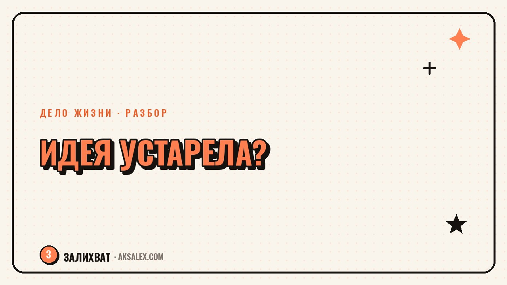

Страх, что твоя идея устарела и не нужна никому

Ты вроде нашла идею своего дела, но стоит открыть соцсети - и находится человек, который уже делает что-то похожее, да ещё и дольше. Внутри сразу щёлкает: поздно, идея устарела, место занято. Этот страх редко связан с реальным состоянием рынка - чаще он про то, что любое сравнение с чужим результатом бьёт по уверенности сильнее, чем кажется. Разберём, откуда берётся ощущение "уже не актуально", как проверить идею без паники и что делать, если похожие варианты действительно существуют.
Почему кажется, что идея устарела
Страх устаревшей идеи почти всегда возникает не из анализа рынка, а из одного яркого примера. Увидела блогера с похожей темой, услышала про чужой успешный запуск - и мозг мгновенно обобщает единичный случай до вывода "весь рынок уже занят". На деле один пример ничего не говорит ни о спросе, ни о том, свободна ли твоя конкретная подача темы.
Добавляет тревоги скорость, с которой сейчас всё меняется: нейросети, форматы контента, площадки - кажется, что пока думаешь, окно возможностей закроется. Но большинство идей про людей и их реальные проблемы устаревают гораздо медленнее, чем тренды в соцсетях, через которые мы о них узнаём.
Что обычно путают со "идея устарела"
- Идея конкурентна - то есть у неё есть спрос, а не то, что в ней нет места для тебя
- Формат подачи устарел - но саму суть идеи легко упаковать иначе
- Ты сравниваешь свой старт с чужим результатом через пять лет работы
Как проверить идею, а не гадать на тревоге
Вместо того чтобы искать подтверждение страху в ленте соцсетей, полезно задать себе несколько конкретных вопросов. Решает ли идея реальную проблему, с которой люди сталкиваются сейчас, а не три года назад? Спрашивают ли у тебя знакомые что-то похожее на то, что ты собираешься предложить? Есть ли у твоей версии идеи деталь, которой нет у тех, кого ты считаешь конкурентами.
Я два года не начинала делать керамику на заказ, потому что в моём городе уже была одна известная мастерская. Когда наконец начала, оказалось, что у нас совершенно разная аудитория: они делают дорогие подарочные наборы, а у меня спрашивают простую посуду для повседневной еды. Рынок не был занят - я не видела свою нишу внутри него.
Полезно и честно спросить себя: страх перед конкуренцией или страх перед самим стартом? Иногда "идея устарела" - удобное оправдание, чтобы не делать первый неловкий шаг, который пугает сам по себе, независимо от состояния рынка.
Что делать, если похожие варианты уже есть
Наличие конкурентов - это не приговор идее, а подтверждение, что на неё есть спрос. Почти у каждого успешного дела есть аналоги, и люди всё равно выбирают разных исполнителей по разным причинам: кому-то важна цена, кому-то - подход, кому-то - человек понравился в переписке. Твоя задача не обойти всех конкурентов сразу, а найти свою версию идеи, которая честно отражает тебя.
Хорошо помогает конкретика: не пытаться придумать идею без единого аналога в мире, а найти свой угол внутри уже существующего направления. Это может быть другая аудитория, другой формат общения с клиентами, другая цена или твой личный стиль, который невозможно скопировать.
Три рабочих вопроса про конкурентов
- Что в моей версии идеи я делаю иначе, даже если суть похожа
- Для кого конкретно моя подача подходит лучше, чем у других
- Что из моего личного опыта невозможно скопировать конкуренту
Когда страх действительно сигнал, а не тревога
Бывает и обратная ситуация: идея правда морально устарела, и страх подсказывает верно. Это стоит отличать от обычной тревоги перед стартом по нескольким признакам: проблема, которую решала идея, сама исчезла или стала решаться иначе, а не только появились конкуренты в той же нише.
Если за несколько месяцев честного поиска ты не находишь ни одного человека, которому реально нужно то, что ты предлагаешь, - это повод скорректировать идею, а не бросить саму попытку найти своё дело. Отличие от паники в том, что здесь есть конкретные факты, а не только внутреннее ощущение опоздания.
- Факт: никто из опрошенных не сталкивался с этой проблемой - стоит пересмотреть идею
- Не факт: у кого-то похожая идея реализована лучше - это конкуренция, а не устаревание
- Факт: технология или привычка, на которой строилась идея, реально исчезла
- Не факт: идея не нова - большинство хороших идей не новы, важна твоя реализация
Таблица: тревога про устаревшую идею и реальность
Свести мысли в таблицу помогает быстрее отличить реальный сигнал от привычного страха перед стартом.
| Мысль в голове | Что это обычно значит | Что сделать |
|---|---|---|
| Кто-то уже делает похожее | На идею есть спрос, это хороший знак | Найти свой угол внутри направления |
| Все лучшие идеи уже заняты | Сравнение себя-новичка с чужим многолетним опытом | Сравнивать свой старт со своим прошлым, а не с чужим финишем |
| Формат, который я видела, устарел | Устарела подача, а не суть проблемы | Переупаковать идею в актуальный формат |
| Никто не откликается на идею месяцами | Возможный реальный сигнал пересмотреть идею | Поговорить с реальными людьми, а не гадать по тревоге |
Частые вопросы
Как понять, что идея своего дела устарела, а не страшно начинать?
Устаревшая идея обычно подтверждается фактами: проблема, которую она решала, исчезла или люди решают её иначе. Страх начинать не связан с фактами про рынок и остаётся даже при положительных ответах людей - его легко отличить по этому признаку.
Что делать, если конкуренты уже заняли мою идею?
Наличие конкурентов означает, что на идею есть спрос, а не то, что место занято навсегда. Стоит найти свой угол - другую аудиторию, формат или личный подход, который невозможно скопировать.
Почему страшно начинать своё дело, если идея кажется неоригинальной?
Большинство рабочих идей не оригинальны сами по себе - уникальность обычно появляется в реализации и личном подходе автора. Страх неоригинальности часто маскирует страх самого первого шага, а не реальную проблему с идеей.
Как проверить идею своего дела, не теряя месяцы на сомнения?
Достаточно поговорить с несколькими реальными людьми, для которых идея задумана, и спросить, сталкиваются ли они с этой проблемой сейчас. Это быстрее и честнее, чем бесконечно изучать конкурентов в соцсетях.
Что если идея была хороша год назад, а сейчас уже не актуальна?
Стоит проверить, исчезла ли сама проблема или изменился только модный способ её решать - во втором случае достаточно обновить формат, а не отказываться от идеи целиком. Суть большинства человеческих потребностей меняется гораздо медленнее, чем тренды вокруг них.
Раз тема оказалась полезной, вот что почитать следующим. Разбираемся, почему трудно отпустить прежнюю профессию при уходе в своё дело и как попрощаться со старой ролью без чувства, что ты её предал.
Читать статью →а не вручную